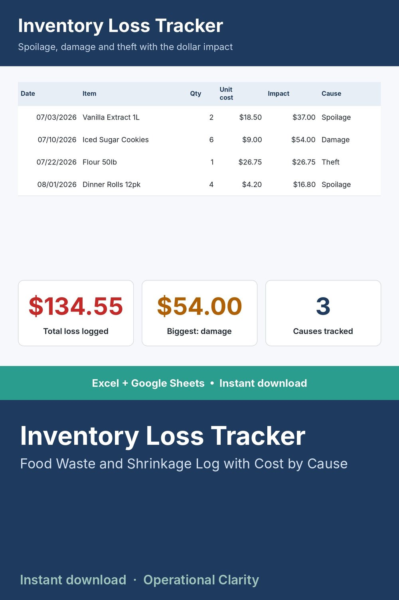

Inventory Loss Tracker

STOP LETTING SPOILAGE, DAMAGE, AND THEFT DISAPPEAR INTO "SHRINKAGE."
A cycle count tells you something's missing. This sheet tells you why - and exactly how much it's costing you by cause, so you can actually fix the pattern instead of just re-counting it every month.
WHAT IT DOES
- Log every instance of loss with a dollar value, not just a quantity: item, cost, cause, notes
- Automatically totals the dollar impact by cause - spoilage, damage, theft, or other
- Pairs with a cycle count sheet: the count catches the variance, this log explains it
WHAT'S INCLUDED
- Excel file (.xlsx) - works in Excel 2010 and newer, no macros, no add-ins needed
- Start Here tab with plain-English setup instructions
- Sample data included so you can see it working before you enter your own numbers
WHO THIS IS FOR
Food, bakery, and retail business owners who want to know where their shrinkage dollars are actually going instead of writing it all off as a mystery.
INSTANT DOWNLOAD - no physical item will be shipped. Because this is a digital product, all sales are final.